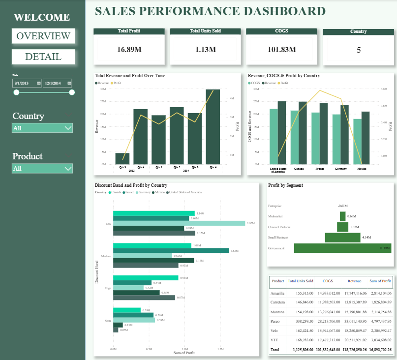

Mình định hướng phát triển theo hướng ứng dụng công nghệ và phân tích dữ liệu vào hoạt động kinh doanh — xem dữ liệu là nền tảng để tối ưu quy trình và hỗ trợ ra quyết định, với sự chính xác được rèn từ công việc kiểm soát chất lượng.
Trong quá trình theo học ngành Kinh tế Quốc tế, chuyên ngành Kinh tế & Kinh doanh số tại Trường Đại học Ngân hàng TP.HCM, mình định hướng phát triển theo hướng ứng dụng công nghệ và phân tích dữ liệu vào hoạt động kinh doanh.
Mình quan tâm đến việc sử dụng dữ liệu như một nền tảng để tối ưu hóa quy trình và hỗ trợ ra quyết định — đây cũng là điều mình đã thực hành trực tiếp qua công việc kiểm soát chất lượng tại Cimigo và các project của riêng mình.
Làm việc và hỗ trợ trong các dự án dữ liệu và chuyển đổi số; song song trau dồi kỹ năng xử lý, phân tích dữ liệu, tư duy phân tích và khả năng truyền đạt trong môi trường chuyên nghiệp.
Trở thành chuyên viên nghiên cứu hoặc phân tích dữ liệu.
Truy vấn và xử lý dữ liệu với SQL, xây dựng dashboard trực quan với Power BI để hỗ trợ ra quyết định.
Kiểm tra, đối chiếu và đảm bảo tính chính xác của dữ liệu trước khi đưa vào phân tích — kỹ năng được rèn từ công việc QC.
Phát hiện sai lệch, bất thường nhỏ trong dữ liệu và quy trình mà người khác dễ bỏ sót.
Sắp xếp và ưu tiên công việc hợp lý để đảm bảo tiến độ khi xử lý nhiều đầu việc song song.
Thành thạo Excel, Word, PowerPoint phục vụ báo cáo và trình bày kết quả phân tích.
Đã hoàn thành khóa học Data Analytics, thực hành xây dựng báo cáo và dashboard thực tế.
Hỗ trợ đội ngũ Quản lý Dự án và Kiểm soát Chất lượng (QC) trong quá trình thu thập dữ liệu sơ cấp và đảm bảo tính toàn vẹn dữ liệu xuyên suốt nhiều dự án nghiên cứu thị trường quy mô lớn (FMCG, Ngân hàng, Giáo dục, Ô tô và Đồ gia dụng).
Rà soát và xác thực các file phỏng vấn ghi âm, đối chiếu chéo dữ liệu qua SurveyToGo, Excel và Google Forms nhằm đảm bảo độ tin cậy dữ liệu cho các dự án nghiên cứu thị trường.
Mục tiêu
Xây dựng dashboard phân tích hiệu quả kinh doanh của doanh nghiệp thương mại điện tử, đánh giá hiệu quả bán hàng, hành vi khách hàng, hiệu suất sản phẩm và các kênh marketing nhằm hỗ trợ ra quyết định kinh doanh.
Công cụ
Power BI
Kết quả đạt được
Insights nổi bật
Kỹ năng đạt được
Quá trình phát triển kỹ năng

Dashboard Power BI đầu tiên
Đây là dashboard Power BI đầu tiên mình từng làm khi mới bắt đầu học Data Analytics — tập trung liệt kê các chỉ số và biểu đồ mô tả (doanh thu, lợi nhuận, số lượng đơn). Từ đó đến dashboard E-commerce phía trên, mình đã học thêm cách dùng DAX, thiết kế KPI có trọng tâm, và quan trọng nhất là chuyển từ "hiển thị số liệu" sang "kể chuyện bằng dữ liệu" — đặt câu hỏi kinh doanh trước, rồi mới chọn biểu đồ để trả lời.
Mục tiêu
Phân tích và đánh giá mối quan hệ giữa chuyển đổi số và tăng trưởng kinh tế của các quốc gia châu Á giai đoạn 2009–2023, từ đó đưa ra các khuyến nghị chính sách phù hợp cho từng nhóm quốc gia theo mức thu nhập.
Đối tượng & phạm vi
Mối quan hệ giữa chuyển đổi số và tăng trưởng kinh tế tại 47 quốc gia châu Á, giai đoạn 2009–2023.
Công cụ & phương pháp
Tổng hợp và làm sạch dữ liệu — Excel; Phân tích dữ liệu — STATA (Phân tích thành phần chính PCA, hồi quy dữ liệu bảng FEM/REM/FGLS); Soạn thảo & trình bày báo cáo — Word.
Kết quả nghiên cứu
Khuyến nghị chính sách
Kỹ năng đạt được
Chương trình mô phỏng việc làm trực tuyến trên nền tảng The Forage do BCG (Boston Consulting Group) tổ chức.
Mục tiêu
Thực hành quy trình nghiên cứu và đề xuất giải pháp chuyển đổi số cho CoffeeCo — một doanh nghiệp ngành F&B: nghiên cứu thị trường, phân tích dữ liệu khách hàng để rút ra insight, đề xuất ý tưởng chuyển đổi số và quản lý tiến độ dự án theo Agile trên Trello.
Công cụ
Xây dựng & chọn lọc ý tưởng — MindMeister; Phân tích, xử lý dữ liệu — Excel; Trình bày & trực quan hóa — Canva, PowerPoint; Hỗ trợ gợi ý đa chiều — AI.
Kết quả
Kỹ năng đạt được
Dự kiến tốt nghiệp năm 2026.
GPA: 3.2/4 (tương đương 8.2/10)
Hoàn thành các nội dung về SQL, Power BI và áp dụng vào project dashboard e-commerce thực tế.
Mình luôn sẵn sàng lắng nghe cơ hội thực tập/công việc liên quan đến dữ liệu và kiểm soát chất lượng.